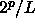
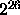
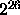

A pseudo random number generator is a finite state machine with at most different states where p is the number of bits that represent the state. One can easily see that the sequence must repeat after at most different numbers have been generated. The smallest number of steps after which the generator starts repeating itself is called the period or cycle length, L. Assuming all cycles have the same length, the number of disjoint cycles (i.e. having no states in common) is then: .
A computer in 1997 might deliver  numbers/processor/ second (or
). Hence it will take 1 second to exhaust a generator with a
26 bit internal state and 1 year to exhaust one with internal
states. This suggests that it could be dangerous to use the 32 bit
generators developed for the microprocessors of the 1980's on today's
computers.
After the sequence is exhausted, the ``true'' error of a simple MC
evaluation integral will no longer decrease and one can be mislead into
trusting an incorrect answer.
numbers/processor/ second (or
). Hence it will take 1 second to exhaust a generator with a
26 bit internal state and 1 year to exhaust one with internal
states. This suggests that it could be dangerous to use the 32 bit
generators developed for the microprocessors of the 1980's on today's
computers.
After the sequence is exhausted, the ``true'' error of a simple MC
evaluation integral will no longer decrease and one can be mislead into
trusting an incorrect answer.
However, for many applications a small period will not in itself bias the results significantly. For example in MCMC we can think of the ``state'' of the random walk as consisting both of the coordinates of the particles (say 3N position variables) and of the internal state of the PRNG. The walk will repeat itself only if all the coordinates are exactly the same. Hence even if the random number sequence repeats, the particles will have moved on and have a different internal state. However, it is not a good idea to have repeating sequences, especially since it is easy to avoid.